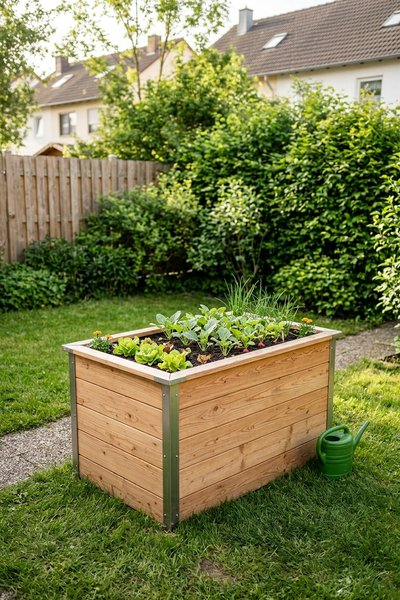
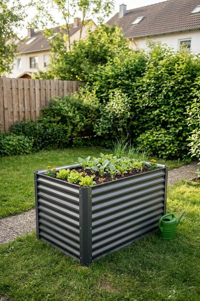
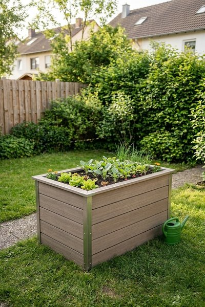

Hochbeet: Holz, Metall oder WPC?
Dasselbe Beet, dieselbe Bepflanzung, drei Materialien. Ein Hochbeet hält viele Jahre – darum lohnt es sich, das Material vor dem Kauf zu vergleichen. Der Winter ist die beste Zeit zum Planen: Im März und April sind viele Modelle schnell ausverkauft.



1. Hochbeet aus Holz
Der Klassiker, meist aus Lärche oder Douglasie. Holz sieht natürlich aus, isoliert gut und passt in jeden Garten. Innen sollte es mit Noppenfolie ausgekleidet werden, damit das Holz nicht ständig nass ist.
Vorteile: natürlich, gute Wärmedämmung, als Bausatz günstig, leicht selbst zu bauen.
Nachteile: hält je nach Holz und Pflege etwa 5–10 Jahre, vergraut mit der Zeit.
ca. 80–180 € (ca. 120 × 80 × 80 cm)
2. Hochbeet aus Metall
Verzinkter Stahl, oft als Wellblech in Anthrazit oder Silber. Modern, sehr stabil und schnell aufgebaut. Metall erwärmt sich in der Sonne – im Frühjahr ein Vorteil, im Hochsommer muss mehr gegossen werden.
Vorteile: sehr langlebig (15 Jahre und mehr), verrottet nicht, oft günstig.
Nachteile: heizt sich in voller Sonne stark auf, Kanten können scharf sein, wirkt kühler als Holz.
ca. 60–150 €
3. Hochbeet aus WPC
WPC ist ein Verbundstoff aus Holzfasern und Kunststoff. Sieht aus wie Holz, verrottet aber nicht und muss nie gestrichen werden.
Vorteile: pflegeleicht, langlebig (15 Jahre und mehr), gleichmäßige Optik.
Nachteile: am teuersten, enthält Kunststoff, wird in der Sonne warm.
ca. 150–350 €
Vergleich auf einen Blick
| Holz | Metall | WPC | |
|---|---|---|---|
| Kosten (ca. 120 × 80 cm) | 80–180 € | 60–150 € | 150–350 € |
| Haltbarkeit | 5–10 Jahre | 15+ Jahre | 15+ Jahre |
| Pflege | Folie innen, evtl. ölen | keine | keine |
| Wärme im Sommer | gut gedämmt | wird heiß | wird warm |
| Optik | natürlich | modern | wie Holz, gleichmäßig |
Richtwerte für Deutschland, Stand November 2026. Die Preise schwanken je nach Händler, Größe und Saison.
Welches Hochbeet passt zu dir?
Günstig und natürlich: Holz – ideal für den Einstieg.
Langlebig für wenig Geld: Metall. In sehr sonnigen Gärten lieber in hellem Silber als in Anthrazit.
Einmal kaufen, nie mehr pflegen: WPC.
Häufige Fragen
Wie viel Füllung braucht ein Hochbeet?
Ein Beet mit 120 × 80 × 80 cm fasst rund 750 Liter. Damit das nicht nur teure Erde ist, wird es in Schichten gefüllt: unten Äste und Zweige, darüber Laub und Rasenschnitt, dann Kompost und oben 20–30 cm gute Pflanzerde.
Welche Höhe ist richtig?
Etwa 80–90 cm ist rückenschonend für die meisten Erwachsenen. Für Kinder oder zum Arbeiten im Sitzen reichen 60 cm.
Wann pflanze ich zuerst?
Salat, Radieschen und Kohlrabi können ab März/April ins Hochbeet, weil sich die Erde dort schneller erwärmt als im Gartenboden. Empfindliche Pflanzen wie Tomaten erst nach Mitte Mai.